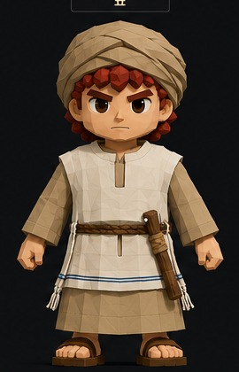

이 게임은 데스크탑 환경에 맞게 제작되었습니다.더 넓은 화면과 키보드·마우스로 플레이해 주세요.
개발 중 공개 알파 데모
고대 예루샬라임과 광야 3D 액션 · v0.5 Alpha
이 버전은 게임의 핵심 콘셉트와 플레이 방식을 소개하기 위한 공개 개발판입니다.일부 지형, 충돌, 인공지능 동작과 그래픽은 계속 변경될 수 있습니다.
© 2026 Adam / JewishKorean. All rights reserved.코드·그래픽·음원·게임 자산의 무단 복제, 재배포 및 상업적 이용을 금합니다.
현재 다비드 플레이만 활성화되어 있습니다.

야영지의 과녁을 향해 최대 5번 연습합니다.
Tab 또는 방향키로 선택 · Enter로 실행
낮을수록 천천히, 높을수록 빠르게 시야가 움직입니다.
마지막 저장 지점에서 다시 시작하시겠습니까?